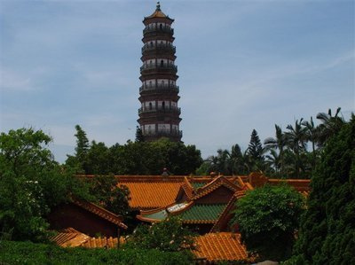
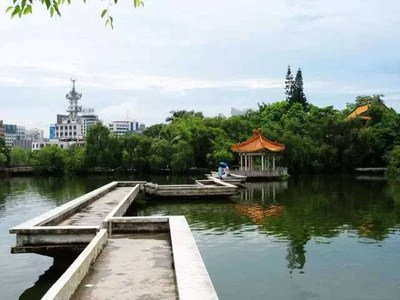
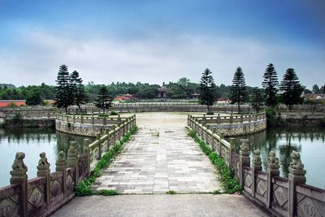

三元塔，为古雷阳八景--"雁塔题名"。此塔建于明万历年间(公元1613-1615年)，高57米，初名"启秀"，寓肇启文风，培育俊秀之意。后因挖地基得蛇蛋三枚，时人认为是"三元及第"之兆，遂改名为"三元塔"，现为广东省文物保护单位。

雷州西湖是一座风景秀丽，人文荟萃，集自然风光、贤踪圣迹于一体的园林式游园，不仅独具南天一格的风貌，而且似耳聆一曲情节起伏的雷州史话。

雷祖祠位于雷州城西南五里之英傍山，依山傍水.风景秀丽，称"雷岗耸异"，为雷阳八景之一。 也是广东省的地方民间信仰之一。雷祖祠始建于唐贞观十六年(公元642年)，是纪念唐代雷州首任刺史陈文玉(雷祖〕的祠堂。1996年11月20日被国务院公布为第四批全国重点文物保护单位。